Derivation¶
The following derivations are directly taken from [Maurer2015].
The electron-phonon interaction¶
Our starting point is the molecular many-body problem in the Born-Oppenheimer approximation. Herein we define an electronic Schrödinger equation (SGE):
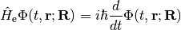
with
(1)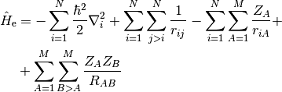
and a nuclear Schrödinger equation as
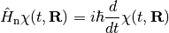
with
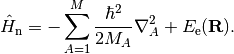
All of the above is given in atomic units, with the exception of explicitly stating 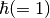. The electronic SGE and its eigenfunctions depend parametrically on the nuclear coordinates. Due to separation of time-scales at which electrons and nuclei move, these equations are solved independently.
We can introduce coupling between the two systems by constructing the full molecular wavefunction as linear combination of products of nuclear and adiabatic electronic wavefunctions in a so-called Born expansion
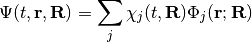
The coupling is introduced by the third term in eq. (1). Insertion into the full time-dependent Schrödinger equation, multiplication from the left with an electronic wavefunction 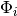 and integration over electronic degrees of freedom we find an additional term in the nuclear Schrödinger equation:
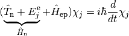
with the action of the electron-phonon coupling term on the nuclear wavefunction defined as
(2)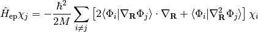
One way to understand this interaction is by viewing it as hybridization between electronic and nuclear wavefunctions. Each nuclear wavefunction is split into as many states as there are electronic excitations (and vice versa). Throughout the remainder of this documentation we will assume 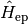 to be small compared to 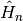, i.e. it does not change the nuclear dynamics qualitatively. This enables application of perturbation theory. In the following we will find an expression for the interaction matrix elements and subsequently use Time Dependent Perturbation Theory to derive our working expressions.
Derivation of coupling matrix elements¶
Next we will find an expression for the matrix elements
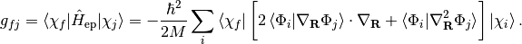
Our starting point is a periodic condensed phase material in which the electronic structure underlying the nuclear motion is given by effectively independent quasi-particles such as calculated with semi-local approximations to Density Functional Theory or the GW method. The unperturbed nuclear motion is described in terms of harmonic vibrations as given by the following Hamiltonian:
(3)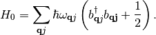
Herein 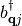 and 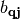 are the usual particle annihilation and creation operators for a phonon  at wavevector 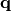. Phonon normal mode displacement vectors are given as 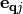. With this choice the scalar coupling term in eq. (2) vanishes due to orthonormality of the nuclear wavefunctions. The matrix element between two many-body nuclear wavefunction states, which only differ by a single one-particle state reduces to
at wavevector 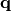. Phonon normal mode displacement vectors are given as 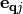. With this choice the scalar coupling term in eq. (2) vanishes due to orthonormality of the nuclear wavefunctions. The matrix element between two many-body nuclear wavefunction states, which only differ by a single one-particle state reduces to
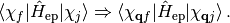
Furthermore, by taking the many-body electronic wavefunction as a product of quasi-particle states with quantum states specified by the quantum numbers 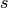, 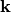, and 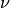 representing spin, wave vector, and band index, all possible single-particle excited states are defined with the above indices for electrons and phonons. Correspondingly the matrix elements are
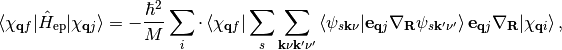
where the different sums run over occupied and unoccupied states in the ground state, respectively. The occupations of the one-particle electronic states and thereby the Fermi level are defined by Fermi-Dirac statistics. With harmonic displacements as starting point we have defined the nuclear derivative in 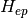 in the basis of these displacements.
The matrix element describing the coupling between two nuclear wavefunctions which differ by replacing a single phonon 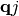 with a phonon 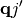 therefore reads

where Brillouin sampling weights 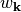 have been accounted for and final state indices follow from momentum conservation. Utilizing the ladder operator technique for harmonic oscillator eigenstates [Mahan2013], [Head-Gordon1992] we find
(4)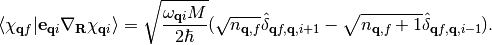
As a result transitions can only occur between vibrational states with 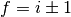. If we assume that we start out in the first vibrationally excited state and are interested in decay to the ground state we arrive at following expression for the matrixelement
(5)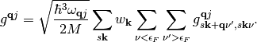
with
(6)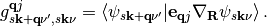
Therefore, the excitation or deexcitation probability of a phonon is given by the coupling of all possible electronic excitations that do not violate momentum conservation.
Often it is more desirable to express the matrix elements  in a different form, namely in terms of nuclear derivatives of the unperturbed Hamiltonian and overlap matrices. In the case of a local atomic orbital representation of the wavefunctions, such a representation was derived by Head-Gordon and Tully [Head-Gordon1992] as well as Savrasov and Savrasov [Savrasov1996] in the current context. To review this derivation we express the wavefunctions in terms of a non-orthogonal, incomplete basis set
in a different form, namely in terms of nuclear derivatives of the unperturbed Hamiltonian and overlap matrices. In the case of a local atomic orbital representation of the wavefunctions, such a representation was derived by Head-Gordon and Tully [Head-Gordon1992] as well as Savrasov and Savrasov [Savrasov1996] in the current context. To review this derivation we express the wavefunctions in terms of a non-orthogonal, incomplete basis set
(7)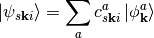
such that following generalized eigenvalue matrix equation is satisfied (In the following intermediate results we will drop the spin index):
(8)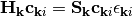
with
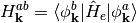
and
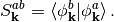
Substituting (7) into the Dirac-braket of eq. (5) gives
(9)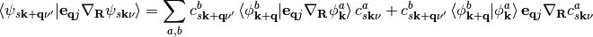
The second term of this equality can be reexpressed as follows using the nuclear derivative of eq. (8)
(10)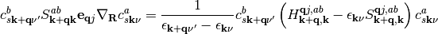
with
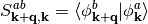
and the nuclear derivative of an operator in matrix representation defined as
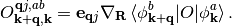
Inserting this result into eq. (5) and changing to matrix representation we find
(11)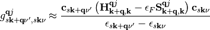
In eq. (11) we assume that the energy difference between states 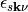 and 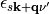 is very small and that both are close to the Fermi level and can be replaced therewith [Head-Gordon1992].
Unfortunately the above terms can not straightforwardly be extracted from an electronic structure calculation in reciprocal space representation due to the dependence on different wavevectors and 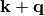 and 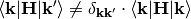. In the case of a plane-wave representation a solution to this problem has been given by Trail et al. with coupling elements given in terms of eq. (?) [Trail2001]. In the current case, we can approach this by transforming the Hamiltonian and overlap matrices themselves to their real-space representations using a Fourier sum over wavevectors within the first Brillouin zone:
(12)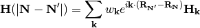
and
(13)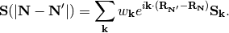
In eq. (12) and (13), and 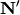 are integer index-vectors that define the absolute position of a unit cell image in the crystal volume  and is the normalization weight of wavevector . We have furthermore defined crystal translation vectors as
and is the normalization weight of wavevector . We have furthermore defined crystal translation vectors as
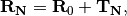
where 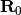 is the center of the principal unit cell and 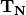 is a lattice translation vector to the unit cell image with index vector [Soler2002], [Blum2009].
From the above results 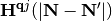 and can be directly calculated using the finite-difference method or Density Functional Perturbation Theory (Coupled Perturbed Kohn-Sham) [Savrasov1996], [Baroni2001]. With the definition of the inverse transformation
and
we may finally express the coupling element of eq. (11) as
Derivation using first order time dependent perturbation theory¶
Our starting point is given by eqs. (3) and (5). The harmonic nuclear wavefunctions are perturbed by a potential , which we assume to be harmonic in time, namely with the frequency of the vibration itself. This can be understood by considering that at the equilibrium position of the nuclei the friction effects due to the electronic structure are zero, while they are strongest at the maximum displacement. The effect, as already discussed, is that electronic and vibrational states hybridize. Therefore all ‘vibronic’ states that can be excited by the phonon frequency will contribute to the decay of the phonon. As a result, in the following we will not distinguish between energies of electronic or vibrational states. The potential introduces mixing between the nuclear eigenfunctions characterized with coefficients :
Expanding the coefficients and wavefunctions in a perturbation series and truncating after the first perturbation term, we can define the probability of excitation between two states (both differing by occupation change between phonons to ) by the absolute square of the first order coefficients:
with as energy difference between all vibronic states generated by the perturbation. Due to our previous assumption of harmonic oscillator states every phonon state can only decay into the next lowest state with the result that the overall probability of finding state being the excitation probability into this state from the next lowest state
(14)
At this point we can introduce our previous result for the coupling matrix element by inserting eq. (5) into eq. (14)
(15)
We are interested in the decay rate in the limit of small perturbing frequencies or, equally, the limit of long time (). Taking this limit we can assume exponential decay and we arrive at the well known Fermi’s Golden Rule expression:
However, even without taking the limit of  , applying the -function
in eq. (15) with a reasonably chosen time would yield a similarly narrow
integration kernel for the typical range of vibrational frequencies found for atomic or molecular adsorbates.
Finally, we can generalize to non-integer finite-temperature occupations and arrive at:
, applying the -function
in eq. (15) with a reasonably chosen time would yield a similarly narrow
integration kernel for the typical range of vibrational frequencies found for atomic or molecular adsorbates.
Finally, we can generalize to non-integer finite-temperature occupations and arrive at:
(16)
With being the perturbing energy for which we apply the delta function in (16) we can re-express the above equation as
For details on how this equation is used in this software, see Theory.
References¶
| [Maurer2015] | R.J. Maurer, M. Askerka, and J. Tully, in preparation (2015) |
| [Mahan2013] | G.D. Mahan, Many-particle physics, Springer Science & Business Media (2013) |
| [Savrasov1996] | (1, 2) S. Savrasov, and D. Savrasov, Phys. Rev. B 54, 16487-16501 (1996) |
| [Baroni2001] | S. Baroni, S. de Gironcoli, and A. Dal Corso, Rev. Mod. Phys. 73, 515-562 (2001) |
| [Blum2009] | V. Blum, R. Gehrke, F. Hanke, P. Havu, V. Havu, X. Ren, K. Reuter, adM. Scheffler, Comp. Phys. Comm. 180, 2175-2196 (2009) |
| [Soler2002] | J.M. Soler, E. Artacho, J.D Gale, A. Garcia, J. Junquera, P. Ordejon, and D. Sanchez-Portal, J. Phys.: Condens. Matter 14, 2745 (2002) |
| [Trail2001] | J. Trail, M. Graham, and D. Bird, Comp. Phys. Comm. 137, 163-173 (2001) |